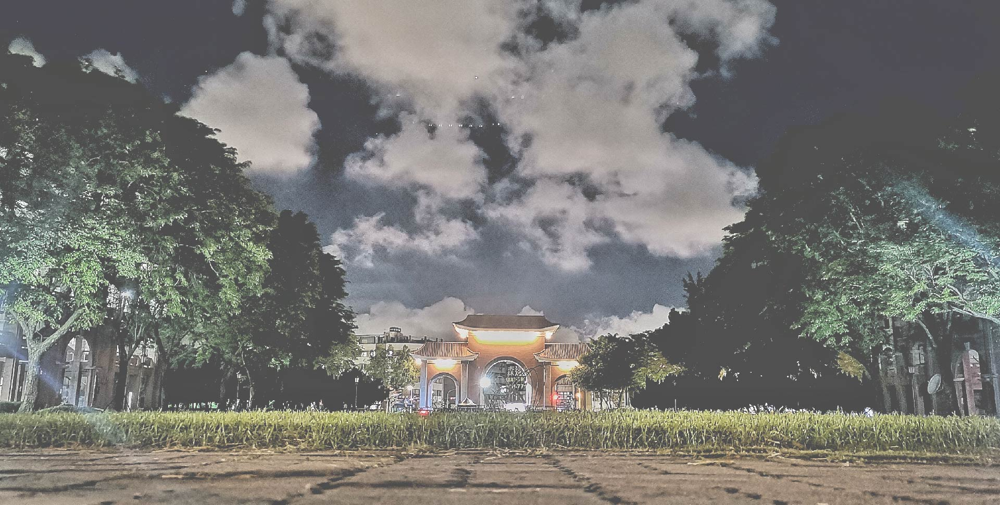
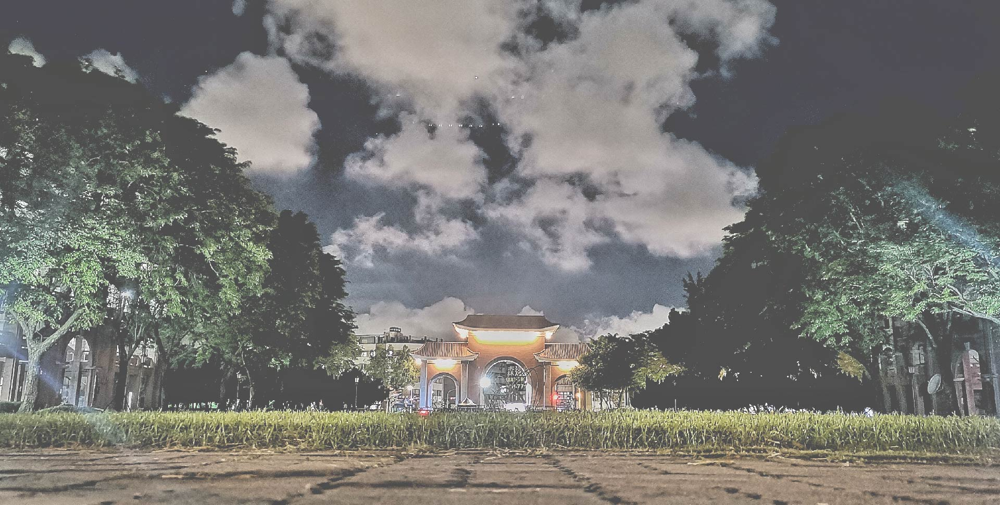
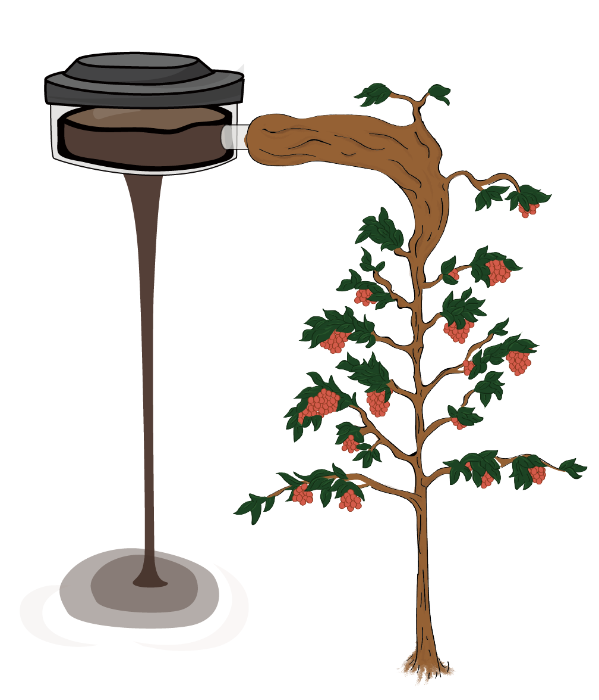

| 姓名 | 張佑涓 | 婚姻狀況 | 未婚 |
| 性別 | 女 | 駕駛執照 | 普通小型車 |
| 年齡 | 22 | 聯絡電話 | 0983674110 |
| 電子郵件 | kitty9328889@gmail.com |
| 通訊地址 | 台中市南區德富路 272 號八樓 |
| 畢業學校 | 國立高雄科技大學 |
| 科系 | 商務資訊管理系 |
| 起迄 (年/月) | 公司名稱 | 擔任職務 |
| 2020 / 02 - 2020 / 06 | 國立高雄科技大學 | 教學網路平台後製人員(約聘) |
| 2018 / 12 - 2019 / 12 | 寶雅國際股份有限公司 | 晚班兼職人員 |
| 2017 / 06 - 2017 / 08 | 國立楠梓特殊教育學校 | 暑期助教 |
| 2020 / 02 - 2020 / 06 | 國立高雄科技大學 教學網路平台後製人員(約聘) |
| 2018 / 12 - 2019 / 12 | 寶雅國際股份有限公司 晚班兼職人員 |
| 2017 / 06 - 2017 / 08 | 國立楠梓特殊教育學校 暑期助教 |
跨平台 RWD 網頁切版
HTML、CSS 樣式實作
JavaScript 程式撰寫
Bootstrap 網站框架應用
繪製網站線框 Wireframe、設計稿
SCSS 網站優化
GitHub 專案版本控制


EEC 企業電子化規劃師 - 網路行銷
丙級電腦軟體應用技術士
TQC-DK 電子商務概論
TQC+ 網頁設計
TQC-DK - 專案管理概論 - 專業級PM3
TQC-OA - Word
RWD 網頁程式設計班 - 結業證書
網頁設計作品
【關於我】
我是張佑涓，今年畢業於高雄科技大學商務資訊管理系，做事態度認真、負責，思考方式具邏輯性、有條理，對網頁開發非常有熱忱，由於是資訊相關科系畢業，程式撰寫具備基礎能力，又加上對於設計方面十分有興趣，也累積了不少美術作品，在與設計師溝通時可以較快速的理解對方的觀點，所以網頁前端工程師是我首選的工作。
【求學歷程】
就學期間一直保持向上、勤奮的學習心態，擔任過幾次的小老師，與老師、同學相處融洽，讀書時期可以說是最開心的時光。在 2019
年曾經獲得「全國大專校院-資訊創新應用競賽(第四名)」及「校內專題比賽(第三名)」，擔任主講人與網站開發一職，開發過程中由於時間緊湊、主題難度高，發生過不少次意見衝突，慶幸的是組員間都會互相溝通、尊重彼此，專題才能順利落幕。
除了課業外，也參與了系學會，擔任副活動長一職，負責管理系學會的各式活動企劃書、接洽廠商，與學校溝通、跑流程等。就任期間也擔任過三場活動總召，學到了如何規劃活動流程、遊戲發想、工作人員配置等。由於自己熱愛音樂的個性，大學時參與了吉他社、搖音社，對於上台面對人群不會畏懼。
【競賽經歷】
大學專題「白色之鏈-醫療病例區塊鏈系統」於 2019 第 24 屆全國大專校院資訊應用服務創新競賽 (InnoServe)，獲得資訊安全組佳作(第四名)。
在此專題內，我負責的部分分為四大項：
1. 主講人：負責撰寫講稿，與組員、老師確認報告內容。
2. 網頁開發：運用 VScode、Bootstrap 套件、MySQL。
3. 文案撰寫、技術文件整理：撰寫企畫書、進行文字排版。
4. 海報製作：利用 Ps 繪製出一張圖像合成海報。
【職訓局 － RWD 網頁程式設計班】
為了精進自己網頁開發與美術設計的能力，參加了職訓局的 RWD
網頁程式設計培訓班，在職訓期間接觸了很多設計技巧、程式撰寫，讓我對於網頁開發與製作更加了解、更有興趣，並利用已學的知識做了一些網頁作品，藉由此次訓練增進自己的能力，期望能達到企業基本標準，給貴公司帶來產能效益。
就目前所學的技術：
1.企劃方面：心智圖、流程圖、網站地圖。
2.設計方面：更加熟悉 Ps、Ai，Ps 繪製簡易 3D 透視。
3.程式方面：HTML、CSS、SCSS、Javascript、jQuery。
【工作經歷】
在大學期間擔任過楠梓特殊學校、屏東林邊國小的暑期助教，帶領小朋友學習新的知識，同時也成長了許多。課前必須先熟悉專業科目，思考如何講解，並以淺顯易懂的方式說明，讓對方能夠清楚明白所言之物。看似很簡單的工作，實際上卻沒有想像中容易。
高科大教學網路平台後製人員，工作內容包括：教學影片後製、動畫製作、教學簡報，對於 Ps、Ai、Pr、Ae 十分熟悉，與師長洽談愉快，有不錯的應變能力。
【結語】
期望能接觸更多資訊相關專業，並能在此領域發揮所長，若我的特質符合 貴公司的文化或需求，希望能有面試的機會，謝謝！
我是張佑涓，今年畢業於高雄科技大學商務資訊管理系，做事態度認真、負責，思考方式具邏輯性、有條理，對網頁開發非常有熱忱，由於是資訊相關科系畢業，程式撰寫具備基礎能力，又加上對於設計方面十分有興趣，也累積了不少美術作品，在與設計師溝通時可以較快速的理解對方的觀點，所以網頁前端工程師是我首選的工作。
【求學歷程】
就學期間一直保持向上、勤奮的學習心態，擔任過幾次的小老師，與老師、同學相處融洽，讀書時期可以說是最開心的時光。在 2019 年曾經獲得「全國大專校院-資訊創新應用競賽(第四名)」及「校內專題比賽(第三名)」，擔任主講人與網站開發一職，開發過程中由於時間緊湊、主題難度高，發生過不少次意見衝突，慶幸的是組員間都會互相溝通、尊重彼此，專題才能順利落幕。
除了課業外，也參與了系學會，擔任副活動長一職，負責管理系學會的各式活動企劃書、接洽廠商，與學校溝通、跑流程等。就任期間也擔任過三場活動總召，學到了如何規劃活動流程、遊戲發想、工作人員配置等。由於自己熱愛音樂的個性，大學時參與了吉他社、搖音社，對於上台面對人群不會畏懼。
- 網站地圖
- 手繪稿
- Wireframe
- 設計稿
- 程式撰寫
整理網站內所需要的資訊，參考各式網站風格，彙整出合適的參考樣式，編排整理動線，設想使用者資訊閱讀是否流暢
初步畫面編排，圖文布局，以手繪的方式快速描繪畫面大綱，如需調整可以快速更改，不用在前期花費多餘的時間，如果要調整風格、內容，也不會白費太多的功夫。 需設想 RWD 切版問題，繪製螢幕寬度為 1920px 電腦版時考慮縮版動線，在此步驟我不一定會畫出手機版，除非版型與電腦版差異大
黑白框線稿不考慮色彩，著重布局，設想使用者觀看畫面時是否流暢，不同區域有無區分 將文字圖案依實際尺寸製作，細調手繪稿的長寬比例， 並繪製所有版型。(本網站設計三種版型，分別為 1920、768、320)
使用 Ps 製作合成圖，需思考光線反射，合成物件的角度是否合理，個人認為最困難的就是選圖、定主題，在不考慮手繪、攝影的情況下，素材與時間是一大關鍵，因為想做的主題不一定有合適的素材，在參考大量素圖時，又容易三心二意地因好素材而改變主題，在這反反覆覆中耗費了很多時間，希望在往後的日子裡可以找到更有效率的方式。
使用素材
Low Poly 低面數圖像，繪製這款影像的技巧在於，分析畫面切線時注意整體結構、色彩分配，由於是低面數容易發生失真問題，所以在切割時不是同區域的部分，就不要包在一起，原圖線條也是同樣道理，手有細長的感覺，切割時就盡量以長型區塊做劃分，上色前記得檢查切點是否有連好。
Layout Guide
Original
在這份作品中首次挑戰電繪海報，以插畫、淡雅的淺色調作為背景，畫面中心溢出柔順的咖啡，打動著你我的味蕾，視覺動線從上方的logo順著器具圖示往下延伸，以輕重順序階層閱讀，不易忽視畫面重點，右下方則附上卡啡那店內實體照片，讓觀看者能了解更店內真實的氛圍。

這是我花最多心力練習排版的作品，行距、字距一一細調，內距與外距大小依關聯性調整，來來回回多次比對，時不時在各物件中增加關聯，希望提升名片整體和諧，最後放到大小100%檢查，QRcard是否可被讀取? 文字大小可否閱讀? 如果因為美感而忽略實用性，那就本末倒置了。